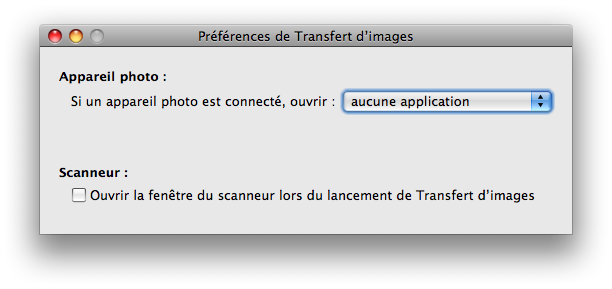
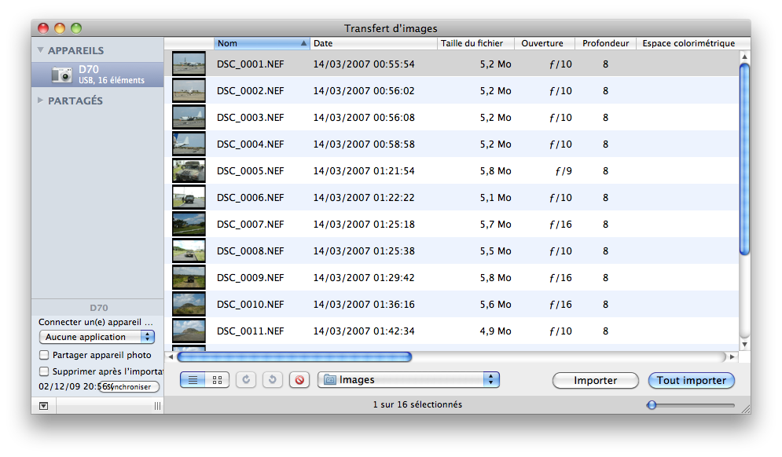
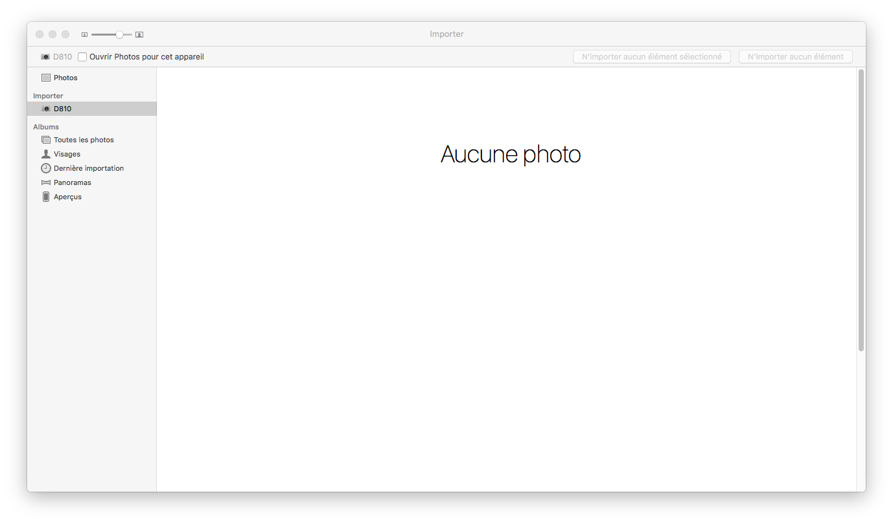

Détection Automatique des Appareils Photo Numériques
Pour configurer la détection automatique des appareils photo numériques, de Tiger à Sierra, vous devez lancer l’application Transfert d’images. De Yosemite à Sierra, merci de lancer l’application Photos.
-
Lancez l’application Transfert d’images située dans votre dossier Application.
-
Ensuite si vous utilisez Tiger ou Leopard, sélectionnez Préférences… dans le menu Transfert d’images. De Snow Leopard à Sierra passez directement à l’étape 3.

-
Avec Snow Leopard, Lion, Mountain Lion, Mavericks, El Capitan ou Sierra, le réglage de désactivation à la connexion n’est plus global, mais associé à un appareil. Il faut donc le désactiver pour chaque appareil que vous êtes susceptible de connecter pendant l’utilisation de Lunar Eclipse Maestro.

-
Vérifiez bien que aucune application est sélectionné lors de la connexion d’un appareil numérique.
Autrement des applications seront lancées lors de la connexion d’un appareil numérique, bloquant le contrôle de Lunar Eclipse Maestro.
|
Pour configurer la détection automatique des appareils photo numériques, de Yosemite à Sierra, merci de lancer l’application Photos.
-
Lancez l’application Photos située dans votre dossier Application.
-
Le réglage de désactivation à la connexion n’est plus global, mais associé à un appareil. Il faut donc le désactiver pour chaque appareil que vous êtes susceptible de connecter pendant l’utilisation de Lunar Eclipse Maestro.

-
Vérifiez bien que Ouvrir Photos pour cet appareil est désélectionné lors de la connexion d’un appareil numérique.
Autrement des applications seront lancées lors de la connexion d’un appareil numérique, bloquant le contrôle de Lunar Eclipse Maestro.
|
Pour les applications possédant un réglage de désactivation, comme par exemple Nikon Transfert, il est aussi nécessaire de les désactiver. Merci de lire leur documentation si vous ne savez pas comment procéder.